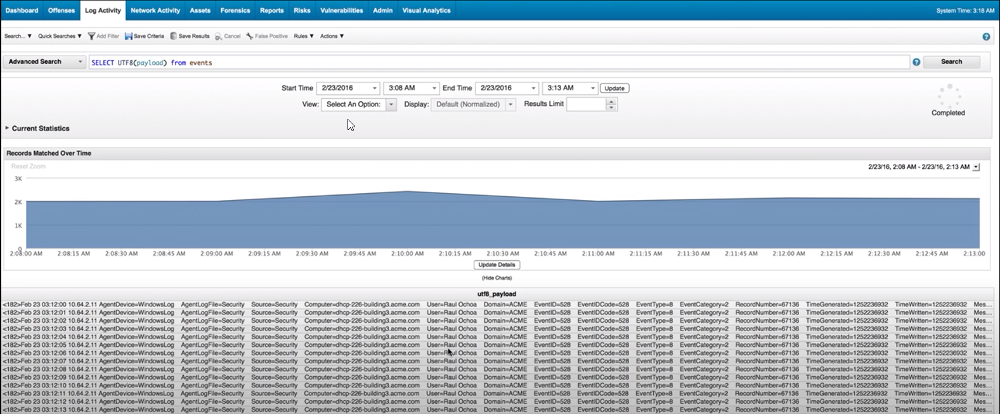

SELECT UTF8(payload) from events
- single result column 'utf8_payload'

------------------------------------------------------------------------------------------------------------------------------------------------------------
SELECT qid,QIDNAME(qid), * from events
~ selects qid and qidname columns first then puts the rest after with the *
------------------------------------------------------------------------------------------------------------------------------------------------------------
SELECT qid,QIDNAME(qid) AS "My Parameter" from events
Rename Parameter
------------------------------------------------------------------------------------------------------------------------------------------------------------
SELECT QIDNAME(qid), * FROM events WHERE QIDNAME(qid) ILIKE '%HEALTH%' LAST 2 DAYS
queries qid first column, then rest. The displays where QID name includes "health" ~~~ % is a wildcard

------------------------------------------------------------------------------------------------------------------------------------------------------------------------------------------------------------------------------------------------------------------------------------------------------------------------
select UNIQUECOUNT(DATEFORMAT(firstpackettime,'MM')) As 'different months', UNIQUECOUNT(DATEFORMAT(firstpackettime,'dd')) As 'different days', sourceip, destinationip, sum(sourcebytes/1048576) As 'transmitted data (MB)', count(*) As 'total flows' from flows where flowdirection='L2R' GROUP BY SourceIP, destinationip last 200 DAYS
select UNIQUECOUNT(DATEFORMAT(firstpackettime,'MM')) As 'different months', UNIQUECOUNT(DATEFORMAT(firstpackettime,'dd')) As 'different days', UNIQUECOUNT(sourceip) As 'different SourceIP',destinationip,XFORCE_IP_CATEGORY(destinationip), sum(sourcebytes/1048576) As 'transmitted data (MB)', count(*) As 'total flows' from flows where flowdirection='L2R' and XFORCE_IP_CATEGORY(destinationip) is not NULL GROUP BY destinationip last 200 DAYS
GET IP classificassions
select UNIQUECOUNT(DATEFORMAT(firstpackettime,'MM')) As 'different months', UNIQUECOUNT(DATEFORMAT(firstpackettime,'dd')) As 'different days', UNIQUECOUNT(sourceip) As 'different SourceIP',destinationip, sum(sourcebytes/1048576) As 'transmitted data (MB)', count(*) As 'total flows' from flows where flowdirection='L2R' GROUP BY destinationip having sum(sourcebytes) "PUT A RIGHT BRACKET HERE" 1048576 last 200 DAYS
DRILL DOWN
select DATEFORMAT(firstpackettime,'yyyy-MM-dd HH:mm:ss') As 'FlowStartTime', sourceip,sourceport, destinationip, destinationport, (sourcebytes/1048576) As 'transmitted data (MB)' from flows where destinationip = '91.234.46.206' last 200 DAYS
select QIDNAME(qid), sourceip, destinationip, "sc-status" from events where qid= 49750002 last 15 MINUTES
Traffic error codes
select QIDNAME(qid), sourceip, destinationip, CASE "sc-status" when '200' then 'OK' when '400' then 'Bad request' when '401' then 'Unauthorized' when '403' then 'Forbidden' when '404' then 'Not found' when '500' then 'Internal Server Error' when '10060' then 'A connection timed out' when '12234' then 'The traffic was blocked by IPS' when '12308' then 'The server is too busy to handle this request' else 'N/A' end As 'HTTP status' from events where qid= 49750002 last 2 HOURS